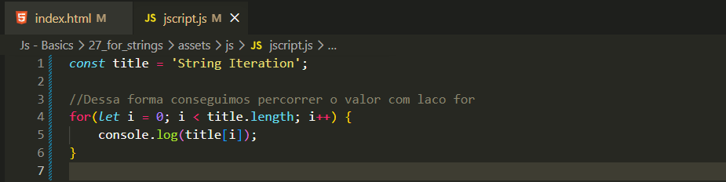

Agora iremos ver como funciona o laço de repetição for ao interagir com strings.
Percorrendo String
Para percorrer uma string utilizando o for, podemos fazer da seguinte forma:

Dessa forma, podemos observar que o laço for percorre todos os caracteres da string.
Para isso, utilizamos a variável i, que representa o índice (posição) de cada caractere.
Com esse índice, conseguimos acessar cada letra da string utilizando string[i], permitindo manipulá-la.
O .length é utilizado para definir até onde o laço deve ir, ou seja, o tamanho total da string.
Portanto, a condição i < title.length significa que o laço continuará enquanto o índice for menor que o tamanho da string.